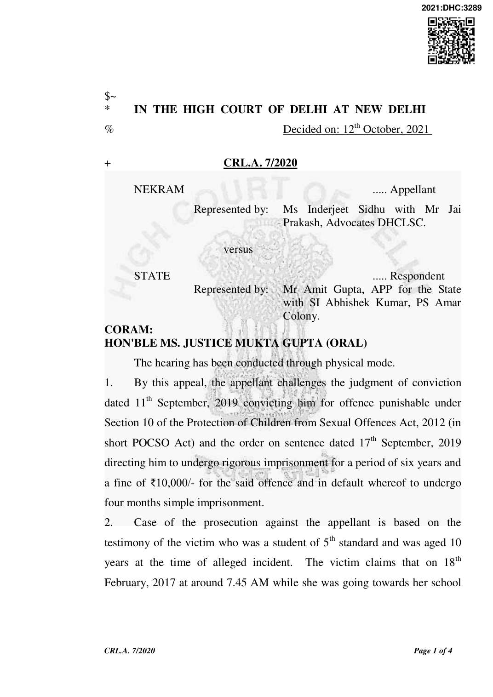

and her father PW-5 was walking 10-15 steps behind her, she took the turn on the road going towards her school, when the appellant suddenly caught hold of her and forcibly kissed on her cheek. The victim raised alarm on which her father also reached at the turn and overpowered the appellant with the help of public persons. In the meantime son of the previous landlord of
the victim PW-6 also came at the spot and the appellant was taken to the Police Station.
- Statement of the victim was recorded immediately which was exhibited vide Ex.PW-5/A based whereon FIR No. 71/2017 under Section 354 IPC and Section 10 of the POCSO Act was registered at PS Amar Colony. The victim was medically examined and her statement under Section 164 Cr.P.C. was also recorded vide Ex.PW-1/A. The age of the prosecutrix was proved by examining the Principal of the school as PW-2 who produced the original school record before the Court and proved that the victim was admitted in 1st standard and had passed out in 5th standard and her date of birth was mentioned as 10th June, 2006. Thus, on the date of incident, the victim was 10 years old and thus a ‘child’ as defined under Section 2(d) of the POCSO Act.
- Father of the victim also deposed that on reaching the spot he noted that the appellant had caught hold of her daughter and was touching his mouth on the cheek of his daughter and on seeing this he immediately rushed to save his daughter from the clutches of the appellant. The appellant was beaten by the public persons and in the meantime PW-6 also came at the spot and they took the appellant to the Police Station. Version of the victim and PW-5 is further corroborated by PW-6, son of the previous landlord of the victim’s family.
- In his statement under Section 313 Cr.P.C. the appellant denied the incriminating evidence against him and though he has admitted his presence at the spot he denied having sexually assaulted the victim. He stated that while he was passing through the spot and the victim was coming from the opposite direction, his hand accidentally touched the victim for which he

immediately apologized but the father of the victim was not willing to accept the apology and started beating him. He stated that the victim has falsely deposed against him at the instance of her father.
- The fact that the appellant was present at the spot is thus undisputed and the only issue which remains is whether the hand of the appellant accidentally touched the victim or the incident as alleged by the victim took place. Version of the prosecutrix is duly corroborated by her father who was just 10-15 steps behind her and would have in the meantime turned towards the road leading to the school and hence a natural witness. Soon after the incident the appellant was taken to the Police Station and statement of the victim was recorded and on the next day statement under Section 164 Cr.P.C. was recorded, thereby diminishing any possibility of tampering or tutoring.
- Considering the evidence adduced by the prosecution which proves beyond reasonable doubt the commission of offence punishable under Section 10 of the POCSO Act, this Court finds no error in the impugned judgment of conviction and hence is upheld. As regards the order on sentence is concerned, the minimum sentence prescribed for aggravated sexual assault punishable under Section 10 of the POCSO Act is imprisonment of either description for a term which shall not be less than 5 years but which may extend to 7 years and shall also be liable to fine. There is no previous involvement of the appellant. During the course of trial and the pendency of the appeal, the appellant has been in continuous incarceration.
- Consequently, this Court deems it fit to modify the sentence of the appellant to undergo rigorous imprisonment for a period of five years and to

pay a fine of ₹10,000/- for commission of offence punishable under Section 10 of the POCSO Act and in default of payment of fine to undergo four months simple imprisonment. On completion of the sentence as modified by this Court, the Superintendent Central Jail Tihar will release the appellant forthwith if not required in any other case.
- Appeal is accordingly disposed of.
- Copy of this order be conveyed to the Superintendent Tihar Jail for updation of record as also intimation to the appellant.
- Order be uploaded on the website of this Court. CRL.M.B. 9/2020 Application is dismissed as infructuous.
(MUKTA GUPTA) JUDGE OCTOBER 12, 2021 ‘ga’